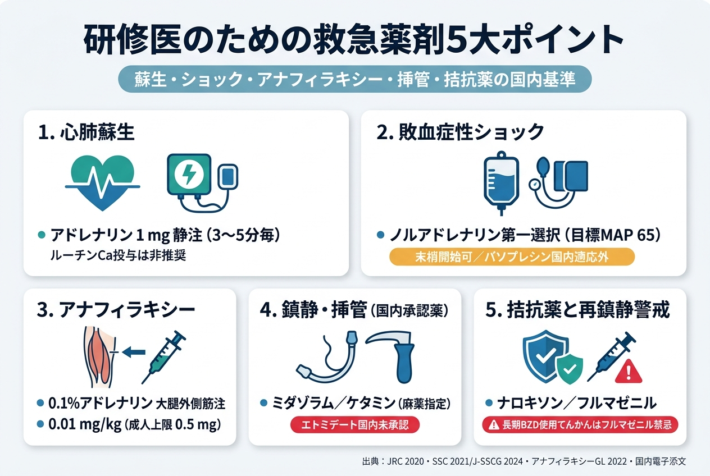

<!doctype html><html lang="ja"><meta charset="utf-8"><meta name="viewport" content="width=device-width,initial-scale=1"><title>研修医として覚えておくべき薬剤の基本（救急編）：図の拡大</title><style>body{font-family:Meiryo,sans-serif;margin:0;padding:16px;line-height:1.7;color:#17374c}main{max-width:1100px;margin:auto}img{max-width:100%;height:auto}a{color:#195b87}h1{font-size:1.35em}</style><main><h1>研修医として覚えておくべき薬剤の基本（救急編）</h1><p>画像をクリック／タップすると原寸で開きます。</p><a href="infographic.png" target="_blank" rel="noopener noreferrer" title="画像を原寸で開く"></a><p><a href="https://blog.ichisouzo-lab.com/entry/2025/05/13/064051">記事に戻る</a></p><p>参考資料：<a href="https://www.jrc-cpr.org/wp-content/uploads/2022/07/JRC_0047-0150_ALS.pdf">JRC 2020</a> ／ <a href="https://pubmed.ncbi.nlm.nih.gov/34599691/">SSC 2021</a> ／ <a href="https://anaphylaxis-guideline.jp/wp-content/uploads/2023/03/guideline_slide2022.pdf">アナフィラキシーGL 2022</a></p></main></html>